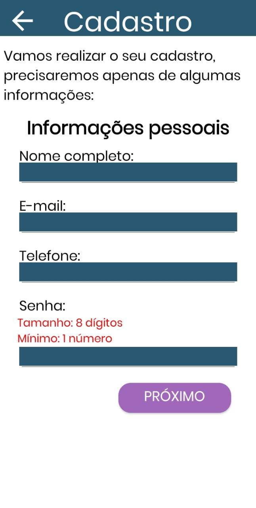
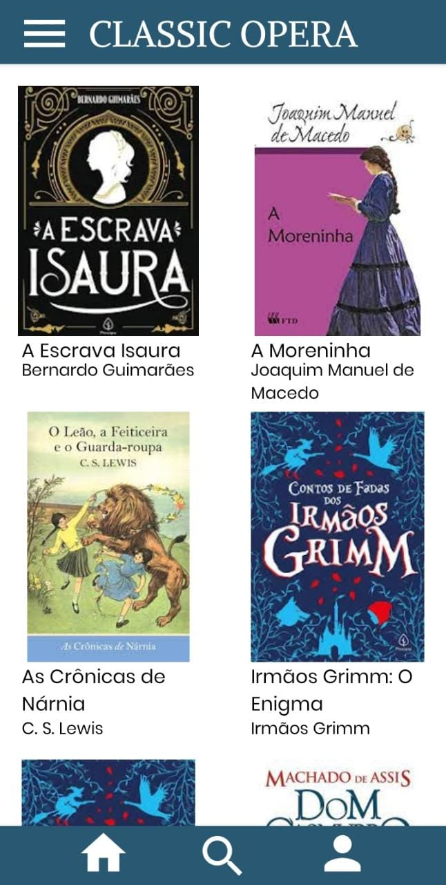
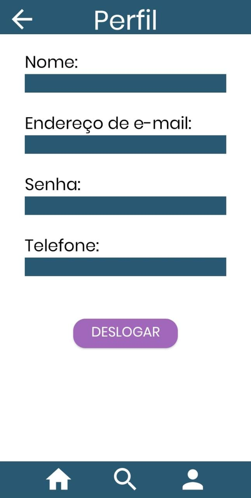
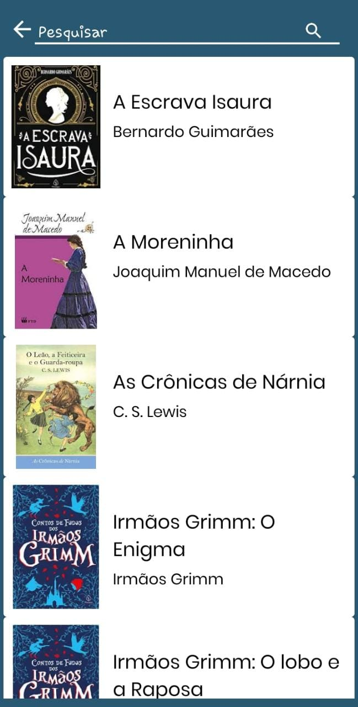

Aplicativo sobre obras clássicas
Desenvolvedores:
- Isabella Sousa Santana - reponsável pela integração do banco de dados ao aplicativo.
- Pamela Yukari Choutick - realização dos documentos e reponsável pela administração do feedback do usuário.
- Raquel Yukie Tsuji - reponsável pela parte da programação.
- Roger Gabriel de Souza de Jesus Costa - realização dos documentos necessários e reponsável pelo design da aplicação.
Descrição:
O projeto visa contribuir para o hábito da leitura por meio da desmistificação das obras como algo monótono e chato, apresentando ao leitor formas diferentes de visualização. Além de influenciar o hábito de leitura, o projeto tem como objetivo ampliar os conhecimentos sobre obras clássicas, que demonstram a realidade em um novo ponto de vista e servem de inspiração para diversas obras atuais.
Para a criação do aplicativo Classic Operas, foi utilizado o SQL (por meio da plataforma Firebase) para a organização dos dados coletados, também foi utilizado o Android Studio para a programação das funções do projeto (utilizando a linguagem Java).
Cronograma:
- Discussão do projeto (21/03/2022)
- Mapa mental (04/04/2022)
- Documento de visão (11-24/04/2022)
- Protótipo de baixa fidelidade (02 a 09/05/2022)
- Diagrama de classes(30/05/2022)
- Casos de uso (06 a 20/06/2022)
- Pesquisas sobre ferramentas de desenvolvimento (27/06/2022)
- Artigo (04 a 11/07/2022)
- Início do projeto no software Android studio (01 a 15/08/2022)
- Teste de caixa branca (22/08/2022)
- Documento de visão (12 a 19/09/2022)
Aparência final do aplicativo:
- Imagens apresentando o Classic Opera.



